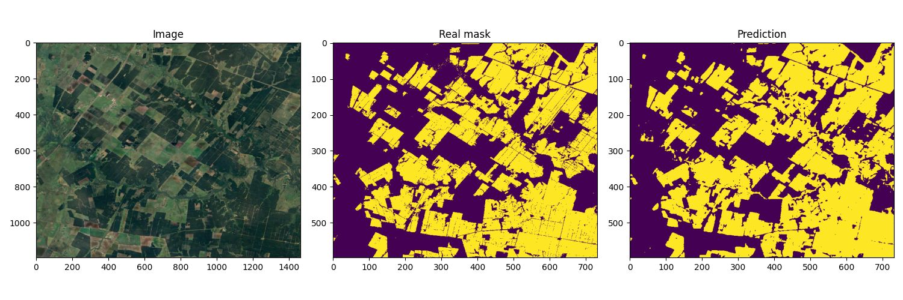
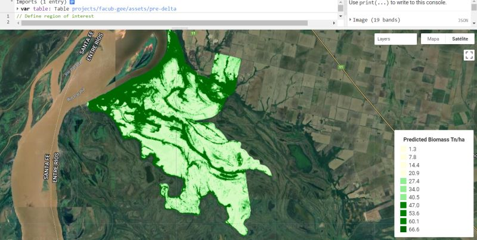
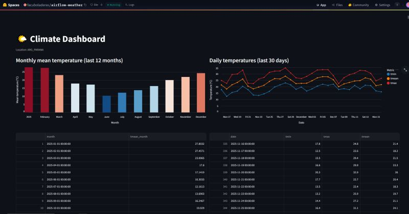
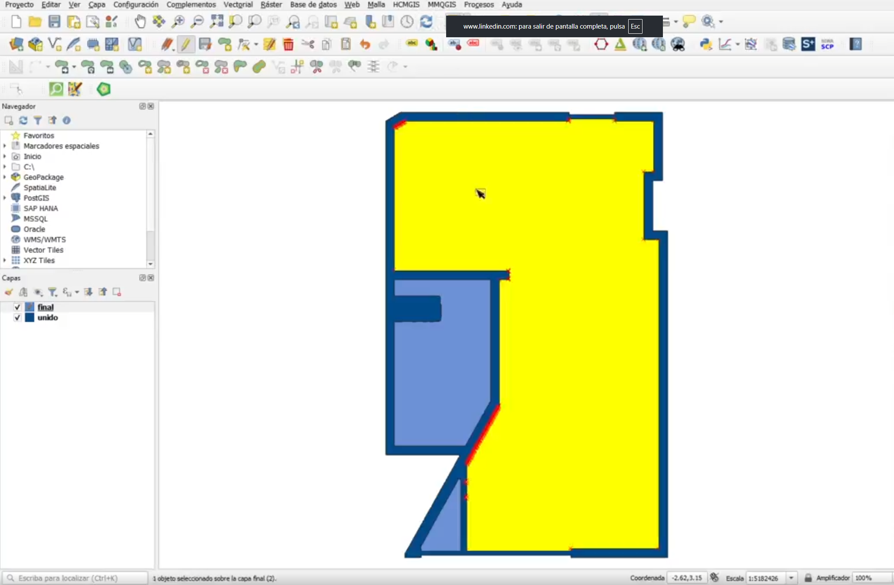

STAGE 01 - START SCREEN
GIS, Teledetección y Datos Espaciales
Transformo datos geográficos en mapas, análisis y soluciones visuales.
🐍 PYTHON CORE
📊 DATA SCIENCE
🛰️ GEE CLOUD
Servicios
Teledetección
Big Data Espacial
Automatización GIS con Python
Profile
Hello, I am a Biology graduate from Universidad Autónoma de Entre Ríos and currently a PhD candidate with a CONICET scholarship.
I specialize in GIS with strong experience in Python and Google Earth Engine, combining data science and geoprocessing to transform spatial data into decisions for research and territorial management.
Proyectos
CARD 01
EPIC

Deep Learning with Images
Estimation of planted forests using deep-learning techniques.
DMG: +92AI VISIONBIOMES
Ver proyecto
CARD 02
RARE

Biomass Estimate
Spatial biomass modeling integrating Python pipelines and eco indicators.
DMG: +85DS MODELECO INDEX
Ver proyecto
CARD 03
RARE

Automation with Python
Low-code and scripted GIS automation to speed up repetitive processes.
DMG: +88PYTHON BOTFAST OPS
Ver proyecto
CARD 04
EPIC

Freelance GIS Services
Project delivery with Rasterio, GeoPandas and point-cloud geospatial tools.
DMG: +76FIELD OPSDELIVERY
Ver proyecto
Tech Stack
PythonQGISGoogle Earth Engine
Data ScienceGeoPandasRasterioPostGIS
GeoServerLeafletStreamlit
TensorFlowPyTorchscikit-learn
XGBoostOpenCVHugging Face
Apache AirflowMLflowOpenCode
AI AgentsLLMs
FINAL - CONTACT
¿Listo para mapear tus datos?
Construyamos productos GIS con estética, claridad y precisión para investigación, gestión y toma de decisiones.
Iniciar contacto